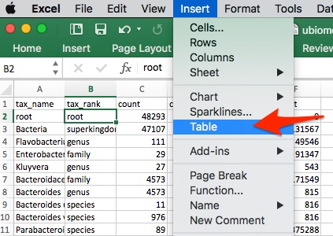
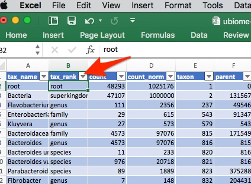
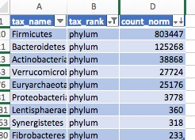
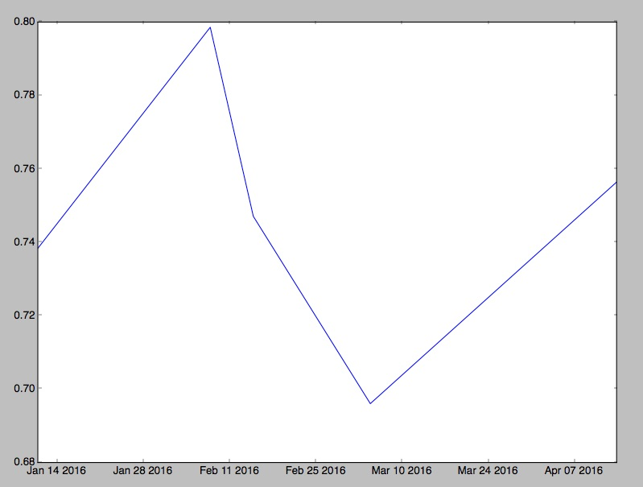
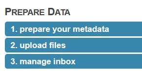
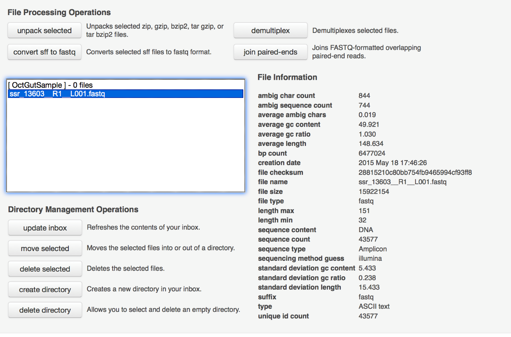
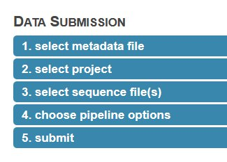
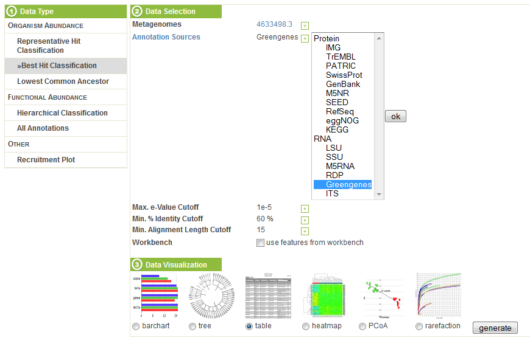

Chapter 3 Explore Your Microbiome
Your first step is to get some data. The most popular laboratory is a San Francisco startup called uBiome, that originally began as crowdfunded campaign on Indiegogo17, but has since handled tens of thousands of samples from people like me who are curious to know what a 16S analysis will reveal about their own microbiome. For less than $100, you send them a sample and a few weeks later they give you access to a private web page that will show you a breakdown of the types of bacteria they found.
3.1 How to Use the uBiome Taxonomy Files
The information you see in the uBiome web app is a greatly simplified view of the data torrent that comes from the gene sequencing machines that crunched your sample. Your raw data can be thousands of lines long, so to be more useful, uBiome provides a much more concise version. It’s called a “taxonomy” file, which is generally only a few hundred lines showing just the organisms that the uBiome computer algorithms think they found in your sample.
Because uBiome JSON files are well-structured, it’s easy to process them with other software, including Excel. That’s our next step: bring this data into Excel.
3.1.1 Study your results in Excel
The uBiome web interface includes an easy way to download your data as a CSV (comma-separated value) file, which can be read into a spreadsheet like Excel. Just click the ‘downloads’ in the ‘Advanced’ tab, like this:

Then select “Download Taxonomy CSV”
and a CSV copy of your results will be downloaded to your computer.
Once the data is in Excel, you can work with it just as you would with any Excel data sheet. Here’s how one of my recent uBiome taxonomy files looks in Mac Excel:

At this point, we can now apply the full power of your Excel skills to do the analysis. I usually start by turning the sheet into a “table”, to make it easier to do filtering and sorting later. Most popular spreadsheets have an easy way to do this. On Mac Excel, I do that from the “insert” menu:

Once I have a table, then it’s easy to apply a filter. For now I just want to look at the Phylum level, so I click the tiny triangle to the right of the “tax_rank” label, like this:

And now I can look just at the Phylum rank. I won’t bother showing each step after this, but after filtering and sorting, I can quickly end up with something like this:

Looks like there is about 80% Firmicutes in this sample, with Bacteroidetes at about 12%, and a few other phyla under about 4%. We’ll go into more detail about what this means, but first let’s talk a little about the uBiome taxonomy file format.
3.1.2 uBiome JSON taxonomy files
Excel is great for a quick overview of your sample, but to really take advantage of the raw data it helps to understand the raw JSON format.
After uBiome’s lab completes the sequencing of your sample, the data generated goes into a bioinformatics pipeline where powerful algorithms use the zillions of DNA letters to find names for the specific organisms that inhabit you. One result, after many hours of computation, is a list of the organisms (taxa) found, along with their taxonomical rank and abundance. The result is stored in a simple structured text format called JSON (JavaScript Object Notation), commonly used across the web. Although it’s not as convenient for people as the rest of the uBiome web site, programmers refer to JSON as “human readable”, because if you squint enough you can sorta tell what it means without a computer program. Here’s a sample:
{
"ubiome_bacteriacounts": [{
"taxon": "2",
"parent": "131567",
"count": "22691",
"count_norm": "1000000",
"avg": null,
"tax_name": "Bacteria",
"tax_rank": "superkingdom",
"tax_color": null
}, {
"taxon": "1239",
"parent": "2",
"count": "15414",
"count_norm": "679300",
"avg": null,
"tax_name": "Firmicutes",
"tax_rank": "phylum",
"tax_color": "5E6591"
}JSON is just structured data. That’s it: a big bunch of lookup keys and values. The keys are unique identifiers and the values are their values. The whole file looks that way. The only requirement of a JSON file is that it be precisely consistent with this pattern, because after all it will need to be read by a computer eventually.
The uBiome Taxonomy JSON files include the key uBiome_bacteriacounts which is mapped to a bunch of fields, each representing a particular organism found in your sample. Look at the figure above to get the basic idea.
3.1.4 Converting uBiome taxonomy JSON to Excel
As already noted, it’s easy to bring uBiome taxonomy data into Excel, and that’s fine for just one or two samples. But if you want more powerful analysis, you’ll need the raw JSON. Go to the uBiome Explorer page and click on the section labeled “Advanced” and then “Downloads”:

You’ll see a page of JSON representing what uBiome found in your sample.

On a desktop computer, if you select-all (press control-A or command-A) then you can copy this data to the clipboard and then into an email to share with a friend.
If you like, you can even convert the JSON directly into Excel. Google “Json to Excel” or “Json to CSV” and you’ll find one. Just paste your data into one of those sites to convert it for either Excel’s native XLS or XLSX format, or the more universal CSV format, readable by Excel. Here are a few of the sites I’ve tested:
http://www.convertcsv.com/json-to-csv.htm
http://www.json-xls.com/json2xls
It’s nice to know that we can always go back to a spreadsheet version when needed. But the real power of JSON comes when you want to handle more than just one or two samples.
3.2 Comparing samples
The uBiome JSON taxonomy file is extremely helpful at giving you a short summary of what you care about most in a sample: the organisms within it and their relative amounts. But even with these annotations, there’s a limit to what you can learn in a single sample. To be able to start hacking your microbiome, you will need to learn how to compare multiple samples.
There are two main things you’ll want to measure when comparing two samples:
Uniqueness: which organisms are found in only one sample and not the other? If you are comparing two samples from the same individual (e.g. Yourself), then uniqueness is another way of talking about either extinctions (when a taxon has disappeared entirely in a later sample) and appearances (when a new taxon magically shows up). In other words, you care a lot about the order in which the samples were taken.
On the other hand, if you’re comparing two separate individuals, then the ordering of the samples doesn’t matter. Uniqueness just tells which organisms are unique to a specific person.
Relative abundance: which person has more of which organism? There are two senses in which we care about the relative frequency of an organism’s occurrence in a sample. You might care, among all the taxons found, which ones are more highly represented in absolute amounts? Or you might care on a relative basis. To help understand why this matters, it may help to think of the following specific example:
In many Americans the phylum Firmicutes makes up a majority of the sample, often reaching 60% or more. You might find two people, one who has 60% Firmicutes and the other with 30% — only half as much. The relative difference is 2x and the absolute difference is 30 percentage points.
On the other hand, you might find Bifidobacterium makes up 10% of the first sample and 5% of the second. In this case, the relative difference is 2x — just like the Firmicutes case — but the absolute difference is only 5 percentage points, much less than in the first example.
The built-in uBiome web tools look for relative differences. A taxon might be a minuscule component of both samples, but when you start from a small base, even a few additional organisms can make up a big percentage change. In the extreme case, a sample with a count_norm of 100 compared to another sample with a count_norm of 300 will show a 3X increase — very high in aBiome terms, even though the absolute difference is only 300 - 100 = 200 organisms.
Compare that with a an organism with a count_norm of 50,000 in one sample and 51,000 in another sample. UBiome’s algorithms will treat these as a virtual tie, even though the absolute number of organisms in the second sample outnumber the first by 1,000 organisms.
Which method of measuring is better? It depends on what you care more about. Some species need only a tiny representation in a sample to make a big difference in health outcomes.
I prefer to use both methods of measurement: absolute number changes for the most popular taxons, and relative amounts more for the less-popular ones.
3.3 Make a single sheet with all your samples
I often read news about a fresh scientific discovery involving the microbiome and immediately wonder if the discovery applies to me. For example, I recently saw a study from Oregon State University]^[http://www.sciencedaily.com/releases/2015/06/150622182034.htm that seemed to find a link between high sugar diets and “cognitive flexibility”, i.e. your ability to adapt and adjust to changing circumstances. The study’s author, Kathy Magnusson, a professor in the OSU College of Veterinary Medicine, found that mice who eat lots of sugar have elevated levels of Clostridiales bacteria, and that this seemed to relate to a slower ability to solve a maze. Hmmm, I thought — how much Clostridiales do I have?
If you have just one uBiome result, that’s easy: log into http://explorer.ubiome.com and search for it in the section “All My Bacteria”. But in my experience a single result doesn’t tell you much. You really need at least two and hopefully several uBiome results to see what might be actionable. In my case, I want to know how my Clostridiales may have changed over time.
If you are comfortable with programming, uBiome has an opensource Python script to generate a single Excel table that combines multiple separate JSON files. Something like this:

The data makes it easy to generate a chart showing how my Clostridiales changes over time:

Hmmm, in my case it looks like something happened since last fall to increase my Clostridiales levels. Maybe it was the potato starch I tried in order to hack my sleep? Was it my trip to Central America in February? And of course the biggest question: has the increase affected my cognitive flexibility? I’m not really sure. Whatever happened, the level of Clostridiales seems to have stabilized in the past couple of months.
uBiome has identified more than 900 unique taxa (groups of organisms) in the half-dozen samples I’ve submitted over the past year, and after running this script I have them all laid out on a single page. Now, armed with this one spreadsheet I can search anytime for a new microbe and quickly see if I have it now, or if it’s ever been detected in a previous test. Reading news about microbiome has taken on a whole new personal meaning when I can see if the discovery relates to me.
Next we’ll show you how to make your own charts.
3.4 Analyze your uBiome Results in Python
The charts and tables you see in the uBiome Explorer are generated from the same data file that you can download for yourself in the Advanced tab. If you’re comfortable with programming, you can pull that data into your favorite software tools for even more analysis.
To get started, look at the open source uBiome Tools Repository which contains source code that will let you:
Compare two samples to find the unique organisms in each.
Compare two samples and show the differences in counts for each.
Merge more than one sample into a single file.
For Python programmers, the code is available either in the official uBiome library or as an easy-to-install library hosted on the Python Package Index and installable through PIP. Just type this from the console application on your computer (either Terminal on Mac, or Powershell on Windows).
$ pip install ubiomeThe uBiome package is designed for either Python 2 or 3, and once installed you can use it as a console script, for a new system command like this:
> ubiome -h
usage: ubiome.py [-h] [-c COMPARE] [-u UNIQUE] [-d DEBUG] sample1 sample2
positional arguments:
sample1 filename for a valid uBiome JSON taxonomy file
sample2 sample you are comparing to
optional arguments:
-h, --help show this help message and exit
-c COMPARE, --compare COMPARE
Compare sample1 with with sample2
-u UNIQUE, --unique UNIQUE
Find items in sample1 not in sample2
-d DEBUG, --debug DEBUG
turn debug mode to run testsIf you have two uBiome-formatted JSON files in the current directory, try this:
$ ubiome -c sample1.json sample2.jsonIt will compare the two samples and output a comma-separated (CSV) dump of the differences between them. Similarly, the following command returns the parts of a sample that are unique:
$ ubiome -u sample1.json sample2.json > uniques.csvNow you’ll have a new file in your directory, “uniques.csv”, that you can load into any spreadsheet program. The file will have a series of rows representing each taxa of bacteria that are unique, i.e. only found in “sample1.json”.
You’ll find both the compare and unique commands useful for understanding the differences between two of your own samples. If you have a sample of yourself before taking probiotics, and another afterwards, for example, this can help you tell what organisms changed and by how much.
The uBiome package can of course be imported into Python as the basis of your own scripts and modules. To see how, run the following series of commands in your Python 2+ or 3+ console:
$ python
>>> from ubiome import *
>>> x1 = UbiomeSample("sample1.json")
>>> x2 = UbiomeSample("sample2.json")
>>> x = UbiomeMultiSample(x1)
>>> x.merge(x2)
>>> # continue to merge as many additional samples as you like
>>> x.write("x.csv")Now your directory will have a new file ‘x.csv’ with all samples merged. The first row is all the taxons ever found in your samples, and the other columns are your different samples, with rows containing the count_norm value for every taxon, including zero values for those taxa that are missing in a particular test.
The merged form, called a UbiomeMultiSample, can do even more. For example, continue to merge a few more samples in the example above, and then run this code:
samples = x.originalSampleObjects # just the UbiomeSample objects of the merged items
diversity = [sample.diversity() for sample in samples]
dates = [sample.date for sample in samples]If you have matplotlib on your system and run this:
plot(dates,diversity)You will see this chart that plots the diversity of a series of samples over time:

See the script ubiome_example.py for a complete example. There are also several user-supplied JSON files for you to try if you want to test your own code on real samples.
3.5 Analyze a FASTQ file
The uBiome JSON taxonomy information will be more than enough for most people new to biology. But for BioCoders and anyone interested in expanding their bioinformatics skills, the raw data files are the place to look.
FASTQ files are the text-based results of a run at your sample using one of Illumina’s high-end gene sequencers.
For example, the first line in my data is:
@NS500457:29:H2HLGAFXX:1:11101:16760:1033 1:N:0:ACTTACA+NTGCGAAThis contains information about the gene sequencing hardware uBiome used for this sample. The other lines in the raw text file contain the actual base pairs detected by the sequencer, along with quality information to indicate the certainty of a particular read. In my case, the entire file is over 170,000 lines long, and that’s just one of the eight files in the FASTQ archive. That’s a lot of data!
Although it’s possible to analyze this data on my own in a tool like BioPython, it’s much easier to submit the raw data to a public gene processing server, such as the Metagenomics Analysis Server (MG RAST) hosted by Argonne National Labs at this site:
Note: You must use the Firefox browser (not Chrome, IE, or Safari), and before submitting any jobs you must apply for a (free) login ID, which you receive by email in a day or two.
After logging in with your new account ID, click the “upload” icon on the home page and follow the process to prepare and submit your data:

Ignore the part about preparing the meta data; you can add it later.
Upload files. The site offers to let you upload from the web browser, but I’ve had better luck using their api and the following curl command:
curl -H "auth: webkey" -X POST -F "upload=@/path\_to\_file/metagenome.fasta" "<http://api.metagenomics.anl.gov/1/inbox/>" > curl\_output.txtI just type this from Terminal on my Mac. Note that you’ll need to get your own webkey (hit the ‘view webkey’ button on the submission page) which you will substitute into the curl command line above. Also change the filename part of the “upload=@” section to point to the correct file. Note that uBiome fastq files are compressed, but it’s okay to upload them as-is. You’ll uncompress them on the server after the upload.
- Manage your inbox. Once the file has successfully uploaded, you’ll see it in your inbox. At this point, you should “unpack selected” if you uploaded a compressed file. Note depending on how busy the server is, it may be minutes or even hours of waiting, and pressing “update inbox” before you see the File Information shown below.

Next you’re ready to submit the data

Here are my suggestions for this section
Check the box to say you won’t supply metadata.
Create a new project and select it.
Select the files you uploaded
Use the default values to choose pipeline options
Submit the job, being sure to make the data publicly accessible immediately, to increase the priority.
There you go! Now a job has been submitted and you wait for it to complete. It usually takes a day or two to complete, after which you’ll receive an email notification. After that, click the bar chart icon on the upper right of the page:
This brings you to an analysis page where you can study your data in much more detail.
When I select my data under “Metagenomes” on the analysis page, I’m offered several options for Annotation Sources. Since the uBiome fastq data comes from 16S ribosomal RNA, I choose to compare my data against one of the large databases of known RNA. The popular Greengenes database is one of them, so I select it, and then ask to generate a table of the results.

The table, sorted by abundance and filtered to phylum, looks like this:

The results roughly conform to what we see from uBiome: the most common organisms are the same in each case, and although the scales are different, the abundance computed corresponds roughly to what we see from the uBiome count field.
Other MG RAST tools let you compare your data against other databases of bacteria and proteins, graph the results, and perform sophisticated statistical analysis to determine other unique features of your sample. You can also compare your sample to microbiomes that have been uploaded by others, enabling you to study your results in much more detail.